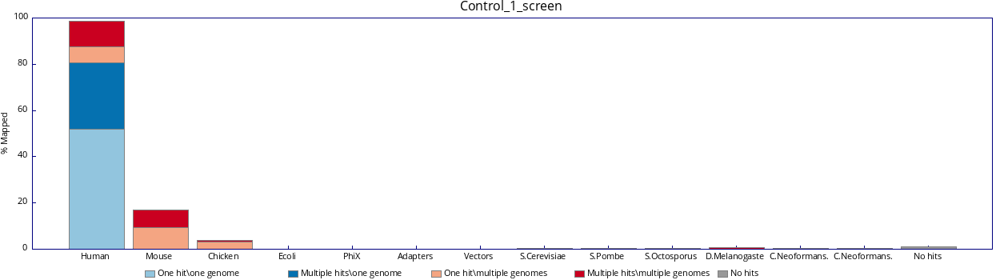
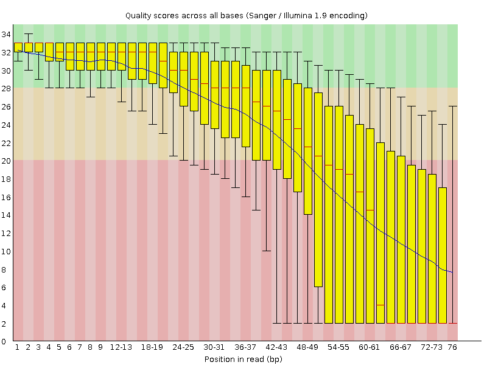
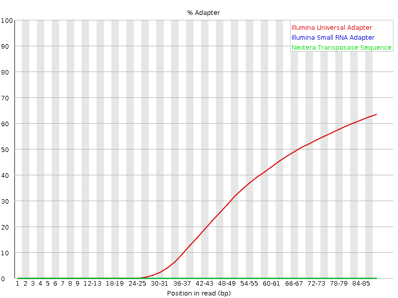
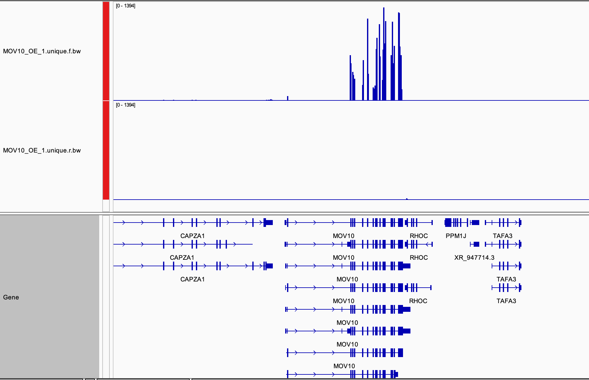
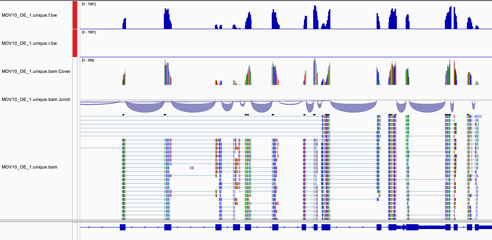

RNA-seq command line analysis
- 1. Getting Started
- 2. RNA-seq sequencing data
- 3. Quality control
- 4. Shell scripts, pipelining and parallelisation
- 5. Quality trimming and adapter removal
- 6. Read Alignment
- 7. Post alignment processing
- 8. Visualising alignments on a genome browser
- 9. Quantifying expression levels
- 10. Finish your script
Learning Objectives
- Set up a project folder on the bioinformatics servers
- Perform quality control on RNA-sequencing reads
- Align reads to a reference genome and perform post alignment filtering
- View read coverage profiles and alignments in a genome browser
- Quantify transcript expression
1. Getting Started
We are using the Linux command line to run most of the tools we use today. If you are new to Linux please complete the Intro to Command Line Workshop.
For a quick refresh of linux commands take a look here.
Logging in
We will use the WCB bioinformatics servers for this practical. If you do not have an account please contact a member of the core facility to get this set up. You will need access to the university network or VPN to access the server.
You will need to use a Terminal app on Mac, Linux or Windows or an alternative app such as MobaXTerm. You can also log in via X2Go if you would like to use a graphical interface.
To login via a command line application:
ssh USER@bifx-core2.bio.ed.ac.ukOnce you have typed in your password, you should see some text and a prompt that looks something like this:
[USERNAME]@bifx-core3:~$Creating A Web Directory
In order to view files created on the server, we need to create a public_html directory in our home folder.
After logging in you should be in your $HOME directory, check with;
pwdThis shows the path of your present working directory, which should now be your home directory as you have just logged in. You can return to this place at any time using the change directory command.
cdYou have permission to create files and directories under your home folder. Let’s create the public_html directory to use later on.
mkdir ~/public_htmlHere we have used ~/ as a shortcut for your $HOME directory. As you have created ~/public_html, contents of this directory are now available online with any web browser
To see it, enter the following URL, changing yourUserName to whatever your username is: https://bifx-core3.bio.ed.ac.uk/~yourUserName
Integrative Genomics Viewer
Please install IGV on your own machine, alternatively you can use the web application.
Key points:
- Make sure you can log in to the bioinformatics server
- Create a personal web directory
- Install IGV on your own machine
2. RNA-seq sequencing data
The data we will we use in this workshop is part of a larger study described in Kenny PJ et al., Cell Rep 2014. The authors investigated interactions between various genes involved in Fragile X syndrome, a disease of aberrant protein production, which results in cognitive impairment and autistic-like features. They sought to show that RNA helicase MOV10 regulates the translation of RNAs involved in Fragile X syndrome.
The RNA was extracted from HEK293F cells that were transfected with a MOV10 transgene (MOV10 over-expression), MOV10 siRNA (MOV10 knockdown), or an irrelevant siRNA (Control). For now, we will just look at the over-expression and control samples.
Metadata
It is also important to collect metadata (information about the data) that describes the samples and the experimental preparation. Some key things to note about these datasets:
- HEK293F is a human cell line so we will align our reads to a human reference.
- The libraries are stranded so we expect reads to align to genes in a strand specific manner.
- The libraries were created with the Illumina Tru-seq adapters.
- 100bp single-end reads were generated.
- They contain ~40 million reads per sample. For the purpose of this workshop we have randomly sub-sampled 200000 reads to speed up computation.
- For each group we have three replicates as described below.
| Dataset | Description |
|---|---|
| Control_1 | Control, replicate 1 |
| Control_2 | Control, replicate 2 |
| Control_3 | Control, replicate 3 |
| MOV10_OE_1 | MOV10 overexpression, replicate 1 |
| MOV10_OE_2 | MOV10 overexpression, replicate 2 |
| MOV10_OE_3 | MOV10 overexpression, replicate 3 |
Obtaining data
First, make a new directory for this tutorial and move into that directory. Then link the directory to your public_html folder as we are going to make everything public in this tutorial.
cd
mkdir RNA-seq_workshop
cd RNA-seq_workshop
ln -s $PWD ~/public_html/Next, create a subfolder called fastq for all of our sequence files and link the raw datasets to this folder:
mkdir fastq
ln -s /library/training/RNA-seq_workshop/data/lesson_1/fastq/*fq.gz fastq/As well as the raw data we will also need access to annotations and reference sequences for the human genome/transcriptome. These are provided for this workshop and should also be linked to your folder:
ln -s /library/training/RNA-seq_workshop/annotation .FastQ files
Sequencing data will typically be provided to you in fastq format (.fq or .fastq) or as a compressed gzipped fastq (.fq.gz) in order to save space. We can view a gzipped file with the zless command, let’s take a look:
cd fastq # Move into the fastq directory (if you haven't already)
zless Control_1.fq.gz | head -n 12Fastq files contain 4 lines per sequenced read:
- Line 1 begins with an ‘@’ character and is followed by a sequence identifier and an optional description
- Line 2 is the raw sequence
- Line 3 begins with a ‘+’ character and is optionally followed by the same sequence identifier
- Line 4 encodes the Phred quality score for the sequence in Line 2 as ASCII characters
Key points:
- Create a project directory
- Link the raw data files to a
fastqfolder - Create a symlink to the annotation data
- Understand the fastq file format
3. Quality control
Next we want to assess the quality of our sequencing data and check for any biases and contamination.
FastQ screen
It is useful to know if your sequencing library contains the types of sequences you expect. FastQ Screen searches for contaminants by mapping a sample of your reads to different genomes. It allows you to specify a custom set of genomes, e.g. all of the organisms you work on, along with PhiX, vectors and other contaminants commonly seen in sequencing experiments. We will run a screen of our data against a few default genomes:
cd .. #Move up a directory again
fastq_screen --conf /homes/genomes/tool_configs/fastq_screen/fastq_screen.conf fastq/*fq.gz --outdir fastq # * is a wild card character so includes all files that end fq.gzOnce complete, take a look at the output images in your browser via your public_html folder. This shows that most of your reads align to the human genome and that no reads align uniquely to other organisms:

FastQC
FastQC provides simple quality control checks on raw sequence data coming from high throughput sequencing pipelines. It provides a modular set of analyses to quickly assess your data before proceeding with analysis.
fastqc fastq/*.fq.gzFastQC will create report files for each of your datasets which we can view in the browser. We will go through each of the images during the workshop. For future reference, specific guidance on how to interpret the output of each module is provided in the fastqc help pages.
An example of poor quality sequencing at the end of short reads:

The software gives a pass, fail or warning flag for each test based on what we would expect from a regular DNA-sequencing run. It is important to realise that FastQC does not understand the origin of your data and that different datasets will have different characteristics. For instance RNA sequencing often involves the use of random hexamer primers that are not as random as you might expect. The profile below in the first ~15 bases is perfectly normal for these samples but will be flagged as an error by FastQC:

Visit the QCFail website for more examples and advice on quality control for NGS datasets.
MultiQC
We can view summaries of multiple reports at once by using multiqc:
multiqc -o fastq fastqMultiQC searches for report files in a directory and compiles them into a single report. Open the multiqc report via a web browser to see how the raw datasets compare. Here we have the output of FastQ_screen and FastQC, but MultiQC works with the outputs of many other tools which we’ll see later.
If we look at the adapter content and over represented sequences sections we can see a small amount of contamination particularly at the ends of the sequencing reads.
Key points:
- Generate QC reports with fastq_screen, fastQC and multiqc
- Learn to assess and perform quality control of raw reads
4. Shell scripts, pipelining and parallelisation
Up until now we have run command line tools on each one of our datasets in serial, this means they run one after the other. In this tutorial we only have a few small datasets and the tools run relatively quickly, but this approach won’t scale well to multiple large datasets. A more efficient approach is to create a script that will run all of our datasets in parallel.
parallel
Unix has a program called parallel which allows you to run tools on multiple datasets at the same time. The following command would list all of your gzipped fastq files and pipe “|” them into parallel.
ls fastq/*fq.gz | parallel -j 5 fastqc {} &
ps f- ls lists files ending with .fq.gz in your fastq directory and pipes the names into the parallel command.
- The parallel -j flag stands for juggle and tells parallel to run 5 processes at the same time.
- In this case we are running fastqc and the {} is a place holder for the filenames we are piping in.
- The & character runs these jobs in the background so we can continue to use the terminal.
- ps is the process status tool which shows jobs running in the current session, we should see 5 instances of fastqc running.
Shell scripts
Putting all of your commands into a script is good practice for keeping track of your analysis and for reproducibility. We want to write scripts so they can be used again on different datasets and avoid hardcoding the names of files.
First, let’s create a file that lists our sample names so we can feed this into our pipeline. We could just type this manually or use a bit of text processing like the code below, here fastq file names are ‘piped’ into parallel as above but we use a regular expression within sed to remove the file name suffix. The output file samples.txt now contains a list of our sample names.
ls fastq/*fq.gz | parallel basename | sed s/.fq.gz// > samples.txtNow let’s create our pipeline script. We’ll start by creating and opening a new file called pipeline.sh. The .sh stands for shell which is essentially just a name for the command line environment.
emacs -nw pipeline.shEmacs is a Unix text editor and the -nw flag opens a new window for editing. Here we are going to paste all of the commands we have used so far:
## PREPARATION
## Create a web directory to view output
ln -s $PWD ~/public_html/
## Create a folder for fastq files
mkdir fastq
## Link the raw data to the fastq folder
cp /homes/library/training/RNA-seq_workshop/fastq/*fq.gz fastq/
## Link the annotation folder
ln -s /homes/library/training/RNA-seq_workshop/annotation .
## QC
## FastQ Screen
fastq_screen --conf /homes/genomes/tool_configs/fastq_screen/fastq_screen.conf fastq/*fq.gz --outdir fastq
## FastQC
fastqc fastq/*.fq.gz
##Multi QC
multiqc -o fastq fastq
## PREPROCESSING The # symbol indicates a comment line and anything preceded by a # will not be run by the command line. It is good practice to comment your code.
Challenge:
See if you can adapt the QC portion of the script to use parallel.
Hint:cat samples.txt will print the names of all of the samples.
Solution
cat samples.txt | parallel -j 5 "fastq_screen --conf /homes/genomes/tool_configs/fastq_screen/fastq_screen.conf fastq/{}.fq.gz --outdir fastq"`
cat samples.txt | parallel -j 5 "fastqc fastq/{}.fq.gz"To save and exit the file press ctrl-x, followed by ctrl-c and then y to save.
Let’s move on with our RNA-seq analysis. Every time we run a tool that creates new output we should add it to our pipeline.sh file. These code blocks will be highlighted in blue. We will learn how to run this script and the full analysis in one go later on.
Although shell scripts save all of your commands they do not necessarily track the versions of software that you use or the current state of your environment and other tool dependencies. They are also unaware of the workflow of your data. More advanced methods of pipelining and containerisation are recommended for fully reproducible analyses and we will see an example of this using NextFlow in the next session.
5. Quality trimming and adapter removal
From the FastQC report we can see that the overall quality of our sequencing is good, however it is good practice to perform some pre-processing and filtering of reads. Poor quality sequencing can make a read less alignable, so it is good practice to quality trim the ends of reads until we get to the high quality portion. Trimming is not always necessary as some mapping programs will trim the reads for you or perform soft clipping where only part of a read is required to align, but studies have shown that pre-processing generally improves alignment rate if done correctly.
Sequencing libraries are normally constructed by ligating adapters to fragments of DNA or RNA. If your read length is longer than your fragment then sequenced reads will contain the adapter sequence. Adapter removal is a necessary consideration for your QC workflow, especially if adapters are detected by FastQC.
An example of adapter contamination at the end of reads: 
Once reads have been trimmed they will vary in length. You may want to filter out reads that are now too short to be uniquely mapped. Normally a cutoff of 20-30bp is standard.
Trim Galore!
In this workshop we will use Trim Galore! for adapter and quality trimming. It is a wrapper around the popular tool Cutadapt which finds and removes unwanted sequences from high-throughput sequencing reads.
Cutadapt can perform quality trimming, adapter removal and read filtering as well as many other operations to prepare your reads for optimal alignment. We will run trim galore! with the following parameters:
- q : Trim reads from the 3’ end with the given quality threshold (Phred score)
- length : Filter out reads below this length
- fastqc : Run fastqc on the trimmed reads
- illumina : Trim the standard Illumina adapter sequences
- cores : Use multiple CPU cores to speed up the computation
- o : the name of the output folder
mkdir trim_galore ## Create a new folder for trimmed data
cat samples.txt | parallel -j 5 "trim_galore --fastqc -q 20 --illumina --length 20 --cores 4 -o trim_galore fastq/{}.fq.gz"To view a trim_galore report:
less trim_galore/Control_1.fq.gz_trimming_report.txtLet’s compare the fastqc reports. Run multiqc on the trimmed data and compare this with the reports for the raw data.
multiqc -f -o trim_galore trim_galoreRemember to add the trim_galore and multiqc steps to your pipeline.sh file.
Other trimming software worth investigating
Trim Galore simplifies the Cutadapt command and also runs fastqc on the trimmed data. However, it is worth looking through the full functionality of Cutadapt which has many options for filtering and trimming reads. Trimmomatic is another tool which has a very sensitive algorithm for detecting adapters, especially in paired-end reads.
Further QC steps
It may be worth looking into a few other tools for quality control of RNA-seq data.
- SortMeRNA can remove sequences that map to ribosomal RNAs. Ideally, your library preparation should include steps to deplete ribosomal RNAs but you can also use tools to remove these from your analysis.
- RSeQC is a QC tool specifically for RNA-seq.
Key points:
- Check for contaminants
- Assess sequence quality
- Understand scripting
- Trim and filter your sequencing reads
6. Read Alignment
There are many tools available for mapping reads to genomes and transcriptomes, each with their own purposes and strengths. RNA-seq data requires a splice-aware aligner that can handle splice junctions in the sequencing reads. The two most popular aligners are STAR, which is very fast, and HISAT2, which is very accurate.

Genome assemblies and indexing
First, we need to select a reference genome to align to. Every time a reference genome is released or updated it is given a new name, often referred to as the genome build or assembly (..hg18, hg19, hg38). It is important to realise that different builds of the same genome are different sequences and thus their co-ordinate systems are incomparable. For instance position 10000000 on chr1 is T in hg19 and G in hg38.
We are going to map our reads to the latest release of the human genome (hg38 or GRCh38). We need to create an index file from the GRCh38 fasta sequence so that STAR can quickly access the reference sequences. Many of these indexes are pre-computed on our servers and stored under the /homes/genomes directory for everyone to use. The indexes for this workshop have are available at **.
The code below shows how these were generated with STAR. You do not need to run this again.
## Download sequence files and latest annotations from Ensembl
#wget http://ftp.ensembl.org/pub/release-106/fasta/homo_sapiens/dna/Homo_sapiens.GRCh38.dna.primary_assembly.fa.gz ## Use primary assembly without Alt contigs but including scaffolds
#wget http://ftp.ensembl.org/pub/release-106/gtf/homo_sapiens/Homo_sapiens.GRCh38.106.gtf.gz
#gzip -d Homo_sapiens.GRCh38.dna.primary_assembly.fa.gz
#gzip -d Homo_sapiens.GRCh38.106.gtf.gz
## Build STAR index
#STAR --runMode genomeGenerate --genomeDir STAR_index_hg38.ensembl106 --genomeFastaFiles Homo_sapiens.GRCh38.dna.primary_assembly.fa --sjdbGTFfile Homo_sapiens.GRCh38.106.gtf --sjdbOverhang 100 --runThreadN 20Mapping reads with STAR
Now that we have an index we can align our reads to the human genome with STAR.
mkdir STAR ## make a new folder for read alignments
cat samples.txt | parallel -j 5 "STAR --genomeDir annotation/STAR_index_hg38.ensembl106 --readFilesCommand zcat --readFilesIn sub/trim_galore/{}_trimmed.fq.gz --runThreadN 4 --outSAMtype BAM SortedByCoordinate --outFileNamePrefix sub/STAR/{}. --sjdbGTFfile annotation/Homo_sapiens.GRCh38.106.gtf --outWigType wiggle --outWigNorm RPM"We are using the following parameters:
- genomeDir : The location of the STAR genome index
- readFilesInCommand : The unix command for reading a *.gz file
- readFilesIn : The location of the fq.gz file
- runThreadN : The number of CPU threads available to each STAR process
- outSAMtype : The output file format
- outFileNamePrefix : Used to name the outputs
- sjdbGTFfile : A gene model and splice junction annotation file in gtf format
- outWigType : Additional output of read coverage profile
- outWigNorm : Normalisation strategy for read coverage profile
Note that we do not need to include the –sjdbGTFfile here as it was already used in creating the index. We can provide the annotations at either step or provide a different file with additional annotation.
We recommend reading the STAR manual to fully understand all of the parameters and output options. Running alignment software with default parameters may not be the best option for your data.
When your alignment has completed, take a look at the output STAR report:
less STAR/Control_1.Log.final.outDiscussion
- How many aligned reads do you have?
- How many of these align to a single location on the genome?
- How many reads map to multiple locations?
SAM/BAM/CRAM format and Samtools
The standard output for most mapping software is SAM (sequence alignment/map format). SAM files contain many columns that describe the position of each alignment as well as information on the quality of the alignment, mismatches, the number of times a read mapped, mapping of paired ends and other custom flags and statistics. SAM files can be very large so there are compressed alternatives BAM and CRAM. The samtools package has many useful tools for viewing, filtering and manipulating files in SAM format. We will use some of these below.
Take a look at the SAM format specification and the first few lines of your BAM output using samtools.
samtools view STAR/Control_1.Aligned.sortedByCoord.out.bam | lessThe second column is the SAM flag and contains coded information about each alignment. Use the Explain SAM flags resource to find out more about the alignments in your file.
We can also see the samtools header using the -h flag which contains information on the parameters and indexes used to create the file.
samtools view -h STAR/Control_1.Aligned.sortedByCoord.out.bam | lessWe can index our bam files with samtools index. This creates an index file for quick programmatic access to the binary file. Indexing is required for some of the samtools programs to work as well as for viewing the reads on genome browsers.
cat samples.txt | parallel -j 5 "samtools index STAR/{}.Aligned.sortedByCoord.out.bam" ## Index the bam filesThe command samtools idxstats outputs the number of reads aligned to each sequence in our reference.
samtools idxstats STAR/Control_1.Aligned.sortedByCoord.out.bamDiscussion
The third column represents the number of alignments.
- Why are there so few alignments to the Y chromosome?
- Why are there any alignments to the Y chromosome?
Key points:
- Align reads to a reference genome with STAR
- Understand the SAM file format
- RNA-seq data must use a splice-aware aligner
7. Post alignment processing
Now that we have aligned our reads we may want to do some filtering before any downstream analysis. Make sure you are aware of the alignments that are reported by your mapping program and the parameters used. For instance, are unmapped reads included in the BAM file? Are all alignments to repeats reported or just one? Are paired-end alignments still reported if only one end maps?
Filtering reads with samtools
There are many ways to filter your BAM files with samtools and other programs to remove unwanted alignments that may negatively affect your downstream analysis. First lets look at the alignments contained in one of our bam files with samtools flagstat:
samtools flagstat STAR/Control_1.Aligned.sortedByCoord.out.bamFlagstat seems to report more alignments than the number of reads shown in our STAR report, how can this be? Our BAM file contains one record per alignment and some reads may align to multiple locations. STAR assigns each read a primary alignment, which is selected randomly from the top scoring alignments.
We can use samtools view -f to include, and -F to exclude reads with a given SAM flag. The flag 260 is the sum of 4 (read is unmapped) and 256 (not primary alignment). This will filter unmapped reads and non-primary alignments to give us a single alignment for each mapped read.
cat samples.txt | parallel -j 5 "samtools view -F 260 -bh -o STAR/{}.primary.bam STAR/{}.Aligned.sortedByCoord.out.bam; samtools index STAR/{}.primary.bam"The -bh option tells samtools view to output in BAM format and to include the header.
If we run samtools flagstat on this filtered bam file we should now have one alignment per mapped read.
samtools flagstat STAR/Control_1.primary.bamMultimap reads and Duplicate reads
Multimap and duplicate reads are often confused so it is important to understand what these are and how they affect your data:
- Multimap reads = The read exists once in your library and aligns to multiple repeat locations in the reference genome.
- Duplicate reads = Multiple unique reads with the same sequence that align to identical locations in the genome.

Multimap reads are difficult to analyse as their ambiguity can confound results. Many applications require the use of unique alignments only, thus multimap reads often need to be removed from your BAM file.
Alignment tools assign a mapping quality to each read (column 5 in BAM) between 0 and 255 that describes the confidence in the alignment position.
You should be aware that mapping qualities differ between mapping tools. STAR uses mapping quality scores of 0 and 255 to represent multimap and unique reads respectively. Filtering out reads with a mapping quality < 255 means that all remaining reads align to a single unique position. We can use samtools view -q to filter based on mapping quality.
cat samples.txt | parallel -j 5 "samtools view -b -q 255 STAR/{}.primary.bam -o STAR/{}.unique.bam; samtools index STAR/{}.unique.bam"Duplicate reads are often observed as tall spikes in your read depth profile where reads are stacked directly on top of each other. A high level of duplication in your library may be due to over amplification by PCR or contamination. In RNA-seq experiments the chances of selecting identical sequences are much higher as our sample size is much smaller (length of transcriptome vs length of genome) and multiple copies of the same sequence (transcripts) exist independently. Thus, it is common practice to retain duplicate reads.
Further Learning
Learn more about duplication and removing duplicate reads:
- Duplication bias
- The Picard package has many useful utilities for manipulating SAM/BAM files. The MarkDuplicates tool will check the alignment positions for duplicate reads and mark or remove them from your data depending on how you wish to treat them.
Removing alignments to regions of the genome
In some cases you may wish to remove reads that align to specific regions of the genome. For instance, if you still have a lot of ribosomal RNAs that will skew your downstream analysis.
- bedtools intersect can remove reads from BAM files that align to specific genomic locations.
Key points:
- Use samtools to summarise and filter your alignments
- Consider filtering your BAM files
- Primary alignments
- Unique alignments
- Duplicate reads
- Regions of the genome
8. Visualising alignments on a genome browser
It is always a good idea to visually inspect your data on a genome browser. Has the sequencing worked as expected? Are there noticeable differences between samples by eye? Do RNA-seq reads align to the expected strand?
Converting BAM files to bigWig
BAM files contain information about each read, which is great if you want to look at individual alignments and splice junctions, but they are typically large and slow to work with. If we are only interested in read coverage we can convert our BAM files to graphs of sequencing depth per base.
The wiggle file format has three columns which represent genomic co-ordinates (chr, start, end) and a fourth which represents a score, in this case the read coverage. A compressed version of this format, called bigWig, is used by genome browsers.
You may have noticed that we already asked STAR to output wiggle files. STAR gives us wiggle files for both unique and unique+multimap reads and also splits these up by strand. Let’s take a look at one of these files:
head STAR/Control_1.Signal.Unique.str1.out.wigLet’s convert the unique files to bigWig format for visualisation. The tool wigToBigWig requires three arguments, an input file, a file of chromosome lengths, and the name of the output file.
mkdir visualisation ## Create a folder for visualisation files
cat samples.txt | parallel -j 5 "wigToBigWig STAR/{}.Signal.Unique.str1.out.wig annotation/Homo_sapiens.GRCh38.dna.primary_assembly.len visualisation/{}.unique.r.bw; wigToBigWig full/STAR/{}.Signal.Unique.str2.out.wig annotation/Homo_sapiens.GRCh38.dna.primary_assembly.len full/visualisation/{}.unique.f.bw"RNA-seq normalisation
TPM, RPM, which are normalised to read depth (RPM = Reads per million bases)
If you would like to create bigWig files directly from BAM files, e.g. after filtering or from other aligners, we recommend using deepTools bamCoverage. bamCoverage has lots of options for filtering, smoothing and normalising read coverage profiles.
Some analysis pipelines use genomeCoverageBed but be aware that this may not output normalised values.
Visualising data on IGV
IGV (Integrative genomics viewer) is a powerful genome browser from the Broad institute. It is perfect for viewing your sequencing files as loading data is easy, common formats are understood, views are customisable and navigation is quick.
Let’s also add of our bam files to the visualisation folder.
cd visualisation
ln -s ../STAR/*unique.bam* .
cd ../It is best to download the desktop app for use on your own machine but if you are using a university managed computer you can access the web app at https://igv.org/app/.
Open IGV and set the genome to hg38, then find your visualisation folder online. In the desktop version you can drag and drop files into IGV. If you are using the webapp you will need to download the files you require and open them using the tracks menu.
Load the two bigWig tracks for MOV10_OE_1 into IGV:

First, let’s navigate the chromosome:
- Use the + / - zoom bar at the top right
- Drag and highlight an area to zoom on the genome ruler
- Type a position or gene identifier in to the search box
- If we zoom in close enough our BAM file will load and we can investigate alignments of individual reads
Now let’s customise our view:
- Select Tracks->Fit Data To Window To automatically set track heights to fill the view (not available on web app).
- Right click on the Refseq genes track (or use the cog on web app) and switch between display modes Collapsed, Expanded and Squished. (Use the horizontal panel divider to adjust height)
- Use the right click menu or cog on the bigwig track name to customise the display. Try the following:
- Rename the track
- Change the track colour
- Change the graph type
- Change the windowing function
- Adjust the data range
- Set the scale to Autoscale. This automatically sets the Y-axis to the height of the tallest peak in your view.
- Select multiple tracks and set the scale to Group autoscale. This will automatically scale tracks together.
Discussion
There are two large spikes on chr1 (forward strand) and chr6 (reverse strand).
- What are these genes?
- Would you expect to see similar spikes in the control?
- Load the control bigWigs and check.

Now load a corresponding BAM file MOV10_OE_1.unique.bam for one of your tracks. Make sure the .bai index file is in the same folder as the BAM. Navigate to the MOV10 gene, you should be able to see all of the aligned reads.

Use the menu for the BAM file to customise the way reads are displayed.
Discussion
- Can you identify mismatches in read alignments?
- Can you identify reads mapping across splice junctions?
- Can you create a sashimi plot?

Other genome browsers
We recommend IGV as it allows you to quickly explore your data. Several other genome browsers exist and the Ensembl and UCSC websites are particularly useful for viewing your data online alongside published experimental data and genomic annotations that exist in their databases.
Key points:
- Convert BAM files to bigWig for read coverage visualisation
- Consider how to normalise read coverage profiles
- View your files in a genome browser such as IGV
9. Quantifying expression levels
Once we have inspected our data and are happy with our alignments, we can quantify expression levels for annotated transcripts. Pseudo-alignment tools, such as Salmon, map sequencing reads directly to transcripts. They are extremely fast, can handle multi-map reads, and take into account multiple isoforms, transcript lengths and sequencing biases when estimating abundance.
Create a Salmon index
Like STAR, Salmon requires an index for alignment. The indexes require fasta sequences of all coding and non-coding RNAs as well as the genomic sequence. The Salmon index for this workshop has been pre-computed using the code below. You do not need to run this as it will already be in the annotation folder you linked previously.
## Download cdna and ncrna fasta files from Ensembl
#wget http://ftp.ensembl.org/pub/release-106/fasta/homo_sapiens/cdna/Homo_sapiens.GRCh38.cdna.all.fa.gz
#wget http://ftp.ensembl.org/pub/release-106/fasta/homo_sapiens/ncrna/Homo_sapiens.GRCh38.ncrna.fa.gz
## Create Salmon indexes
## Concatenate hg38 cdna and ncrna
#zcat Homo_sapiens.GRCh38.cdna.all.fa.gz Homo_sapiens.GRCh38.ncrna.fa.gz > Homo_sapiens.GRCh38.cdna.ncrna.fa.tmp
## Make sure header is transcript name only and remove transcript version number
#perl -lane 'if(m/^>/){$id=(split " ",$_)[0];$id=(split "\\.",$id)[0];print $id;}else{print $_;}' Homo_sapiens.GRCh38.cdna.ncrna.fa.tmp > Homo_sapiens.GRCh38.cdna.ncrna.fa
#rm Homo_sapiens.GRCh38.cdna.ncrna.fa.tmp
## Get genome chr sequences in decoys.txt
#grep "^>" Homo_sapiens.GRCh38.dna.primary_assembly.fa | sed s/">"//g | cut -f 1 -d " " > decoys.txt
## Cat transcriptome and genome to make gentrome file:
#cat Homo_sapiens.GRCh38.cdna.ncrna.fa Homo_sapiens.GRCh38.dna.primary_assembly.fa > Homo_sapiens.GRCh38.cdna.ncrna.gentrome.fa
#gzip Homo_sapiens.GRCh38.cdna.ncrna.gentrome.fa
## Build Salmon index
#salmon index -t Homo_sapiens.GRCh38.cdna.ncrna.gentrome.fa.gz -d decoys.txt -p 24 -i hg38.cdna.ncrna.salmon.index -k 31Further Learning
Creating Salmon indexes is more complicated than STAR but the bioinformatics team can help you out if you need to do this. Several pre-computed indexes exist in /homes/genomes. You can also read more about the method here.
Pseudo-alignment with Salmon
We can now run Salmon to estimate expression levels of transcripts. Biases in sequencing data can lead to over/under estimation of expression of certain transcripts and Salmon has some functionality to overcome this. We will use the salmon quant command with the following arguments:
- i : location of the index files
- r : location of the fq.gz file (use -1,-2 for paired end files)
- l : library type (read the docs to see what this means)
- seqBias : correct sequencing bias in the data
- gcBias : correct GC bias in the data
- o : name of the output folder
mkdir salmon ## Make a folder for salmon output
cat samples.txt | parallel -j 5 "salmon quant -i annotation/hg38.cdna.ncrna.salmon.index -l SR -r trim_galore/{}_trimmed.fq.gz -p 5 --seqBias --gcBias -o salmon/{}"The main output of Salmon is a quant.sf file, take a look at one of these files:
less salmon/Control_1/quant.sfFor each transcript we have five columns:
- The transcript identifier
- The transcript length (in bp)
- The effective length (described in detail below)
- TPM (transcripts per million), which is computed using the effective length
- The estimated read count (‘pseudocount’)
Discussion
What exactly is the effective length?
The sequence composition of a transcript affects how many reads are sampled from it. While two transcripts might have identical length, depending on the sequence composition we are more likely to generate fragments from one versus the other. The transcript that has a higer likelihood of being sampled, will end up with the larger effective length. The effective length is thus a corrected transcript length to account for sequence-specific and GC biases.
Key points:
- Use pseudo-alinger tools like Salmon to estimate transcript abundance
- Understand the Salmon output files
10. Finish your script
We now have our alignments (BAM), visualisation files (bigWig) and transcript quantification (quant.sf) and this is normally a branching point for downstream analyses.
Final reports
The last thing we want to do is to run MultiQC on our folder to compile the reports from Trim_galore, STAR and Salmon:
multiqc -fDiscussion
Take a look at the multiqc report in your public folder:
- Why are there two different values for % Aligned in the general statistics?
- Are you happy with the % of aligned reads?
- Why does the MOV10 sample have more duplicate reads?
- Look at the ‘Per Base Sequence Content’ plot. What’s going on at the 3’ end?
Running your complete script
Your pipeline.sh script should look something like this and we can run everything from start to end in one go. This could take….
mkdir RNA-seq_workshop_tmp #Create a temporary directory
cd RNA-seq_workshop_tmp #Move into that directory
cp ../pipeline.sh ../samples.txt . #Copy the pipeline and samples file into the new directory
ln -s ../annotation . #Link the annotation folder to this new directory
bash pipeline.sh > pipeline.log & #Run the shell script (See Below)
cd .. #Move back to the main directoryWe use the unix tool bash and the name of our script to run our commands through the shell. We then redirect > the output to a log file to keep track of any errors. We use the & to run everything in the background to continue using the terminal.
You can keep track of your pipeline by using ps or looking at the log file.
ps f
tail RNA-seq_workshop_tmp/pipeline.log #Shows the end of a fileTidy Up!
Files are large and disk space is expensive, remove any unwanted or temporary files from your folder. We should always keep the raw data (fastq) and our final processed datasets (BAM, bigWig, quant.sf etc) as well as the code we used to generate them. Where you can, convert files to compressed or binary formats to save space e.g. fq to fq.gz, SAM to BAM, wig to bigWig.
rm trim_galore/*trim*fq.gz #Remove trimmed fastq temporary files
rm STAR/*/*.wig #Remove wig files once converted to bigWigKey points:
- Generate report files for your entire analysis with MultiQC
- Save your analysis as a script and run it in one go
- Learn to manage your data